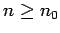
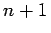
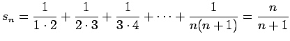

Mit dieser Beweismethode werden Sätze oder Formeln bewiesen, die von natürlichen Zahlen n abhängen. Das Prinzip der vollständigen Induktion lautet:
Ist eine Aussage für eine natürliche Zahl n0 wahr, und folgt aus der Wahrheit der Aussage für eine natürliche Zahl  die Wahrheit der Aussage für , dann ist die Aussage für alle natürlichen Zahlen gültig. Danach erfolgt der Beweis in folgenden Schritten:
Die Schritte 3. und 4. werden zusammengefaßt als Induktionschluß oder Schluß von n auf n+1 bezeichnet.
| Beispiel |
|
Es ist die Formel  zu beweisen.
|